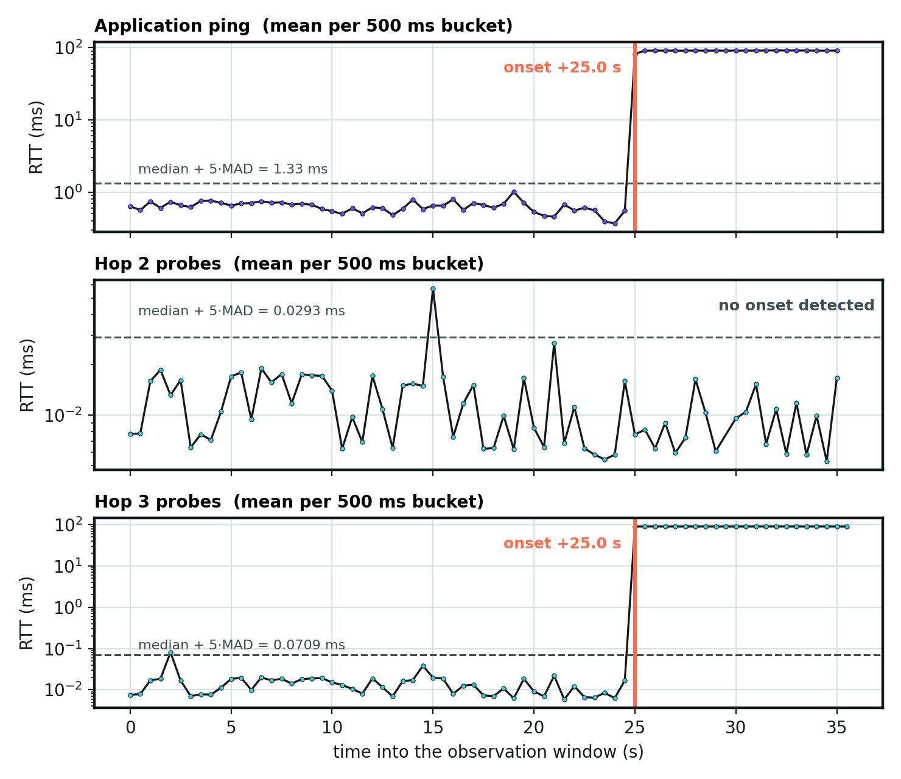
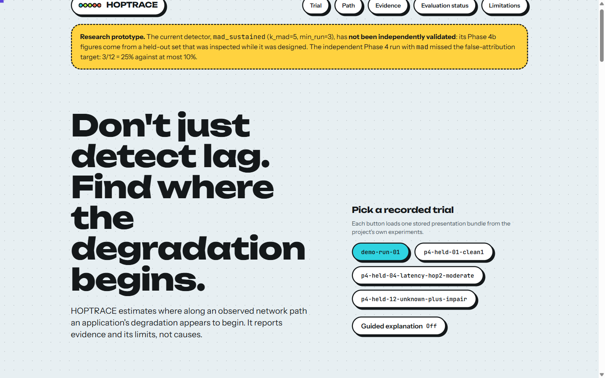
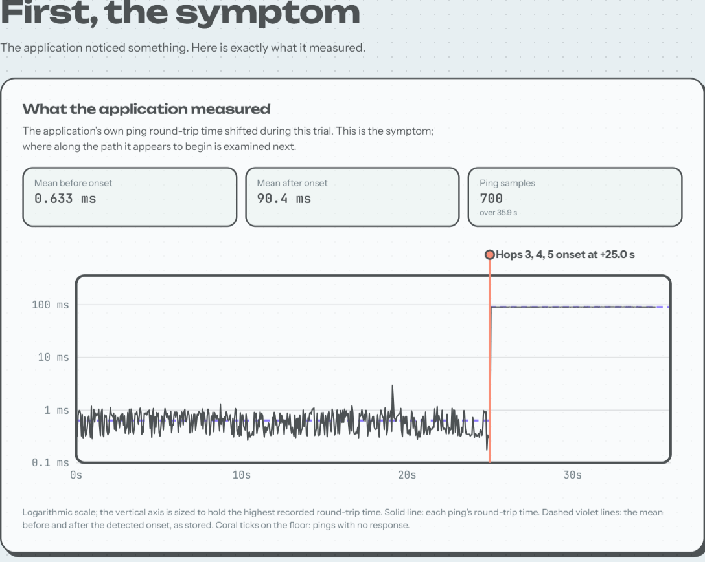
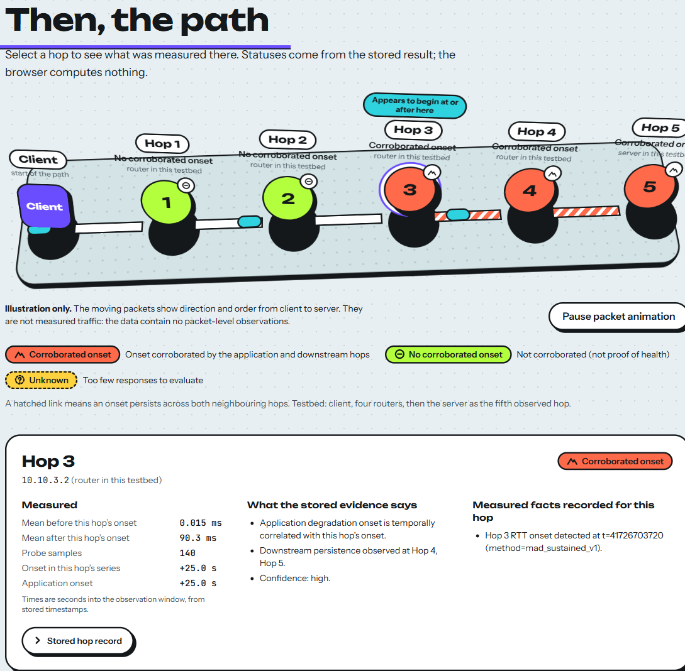
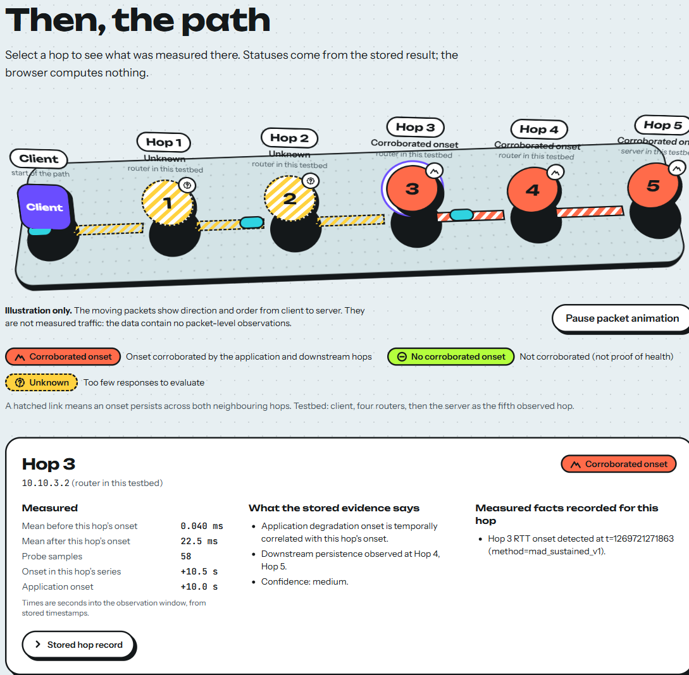

The testbed is a straight line of six namespaces. The client hosts both measurement processes; the server hosts the application endpoint; the four routers forward between them and are the only places a fault can be injected.
testbed/phase0/setup_topology.sh. Hops 1-4 are the routers; Hop 5 is the server itself. Addresses are those assigned by testbed/phase0/lib/common.sh.10.10.N.0/30; the lower node takes .1, the higher node .2)| Subnet | Low-side node : interface | High-side node : interface | Low addr | High addr |
|---|---|---|---|---|
| s1 | ns-client : veth-s1-a | ns-r1 : veth-s1-b | 10.10.1.1 | 10.10.1.2 |
| s2 | ns-r1 : veth-s2-a | ns-r2 : veth-s2-b | 10.10.2.1 | 10.10.2.2 |
| s3 | ns-r2 : veth-s3-a | ns-r3 : veth-s3-b | 10.10.3.1 | 10.10.3.2 |
| s4 | ns-r3 : veth-s4-a | ns-r4 : veth-s4-b | 10.10.4.1 | 10.10.4.2 |
| s5 | ns-r4 : veth-s5-a | ns-server : veth-s5-b | 10.10.5.1 | 10.10.5.2 |
The client address is 10.10.1.1 and the server address 10.10.5.2. A router's probe reply is sourced from its client-facing address, so the five hops appear as 10.10.1.2, 10.10.2.2, 10.10.3.2, 10.10.4.2, 10.10.5.2, which is exactly what the topology check confirms.
net.ipv4.ip_forward=1 only in the four router namespaces. Static, explicit per-subnet routes (no aggregation); the client and server each have a single 10.10.0.0/16 route towards the path.icmp_ratelimit allows about one ICMP error per second per namespace, which silently suppressed most hop replies at a 500 ms probe cadence (about 60% matched in an early run). The setup script sets icmp_ratelimit=0 inside the four router namespaces and the server namespace only. It does not disable packet loss or alter netem/tbf behaviour, and it does not touch the host's own namespace.| Parameter | Value | Source |
|---|---|---|
| Hops measured | 5 (TTL 1-5) | prober.py: TTL_RANGE |
| Probes per hop per round | 2 | SAMPLES_PER_HOP |
| Probe round interval | 0.5 s | ROUND_INTERVAL_S |
| Probe timeout | 0.3 s | PROBE_TIMEOUT_S |
| Application ping rate | 20 Hz (50 ms) | client.py: PING_INTERVAL_S |
| Interaction arrivals | Poisson, mean 2/s | INTERACTION_MEAN_RATE |
| Interaction budget | 150 ms | INTERACTION_BUDGET_MS |
| Missing-reply timeout | 2.0 s | MISSING_TIMEOUT_S (a documented choice, not spec-locked) |
| Analysis bucket width | 500 ms | synchronize.py: BUCKET_WIDTH_NS |
Timeline of one trial. The app server starts in ns-server; the prober and the application client start together in ns-client; a fault, if any, is injected partway through; both measurement processes run to completion; the fault is cleared. All timestamps come from the same monotonic clock, so a fault's start time (in the ground-truth store) and an onset time (in the analysis) are on one scale, but only the evaluation, never the engine, can see the former.
experiments/ (status as recorded in docs/EVIDENCE_LEDGER.md)| Set | Trials | Role | Status |
|---|---|---|---|
p3-* | 5 | Exploratory runs of the first (provisional) pipeline | Exploratory; no reported accuracy |
p4-tune-* | 12 | Tuning for Phase 4 (mad selected) | Tuning, historical |
p4-held-* | 12 | Held-out for Phase 4 | Independent at Phase 4; EXPOSED from Phase 4b onward |
p4b-tune-* | 10 | Tuning for Phase 4b (mad_sustained selected) | Tuning, historical |
demo-run-01 | 1 | Live demonstration run | Demo; not an evaluation trial |
Each 12-trial set contains four clean controls and eight fault trials (latency, jitter, loss and bandwidth, at different hops and magnitudes, some transient), plus trials in which one or two hops return no responses ("unknown" trials). The repository's evidence ledger notes that the 12-trial sets are far below the 120-trial tuning set and 288-cell matrix described in the specification; the reduction is disclosed in evaluate/power_calc.py.
On 27 October 2026 the topology was built, checked and torn down in WSL2 Ubuntu 24.04 with the project's own scripts (no ground-truth database, identity or recorded trial was touched):
bash testbed/phase0/setup_topology.sh # → "topology up." icmp_ratelimit calibration: 0 (ns-r1, expect 0)
bash testbed/phase0/verify_topology.sh
Test 1: 200 packets transmitted, 200 received, 0% packet loss rtt min/avg/max/mdev = 0.017/0.049/0.158/0.020 ms PASS
Test 2: run 1: 10.10.1.2 10.10.2.2 10.10.3.2 10.10.4.2 10.10.5.2 PASS
run 2: 10.10.1.2 10.10.2.2 10.10.3.2 10.10.4.2 10.10.5.2 PASS
bash testbed/phase0/teardown_topology.sh # → namespaces removed; `ip netns list` empty afterwards
The recorded demo trial (demo-run-01) was produced by an earlier live run of demo/run_demo.sh and was not regenerated for this report, because that script overwrites the recorded trial.
Because the prober and the application client are separate processes with separate counters, there are no shared sequence IDs. Alignment instead uses the shared clock: all t_send_mono_ns values are placed on one timeline starting at the earliest sample, and divided into 500 ms buckets (the coarser of the two cadences; pings run at 20 Hz, probe rounds at 2 Hz). For bucket b, the application value is the mean RTT of the pings that responded in it, and the value for hop k is the mean RTT of the probes to TTL k that responded. A bucket with samples but no response is unknown; a bucket with no value is skipped by the detector and never interpolated.
For one series with valid values x1…xn (n ≥ 5, otherwise no onset can be claimed):
m = median(x), MAD = median(|xi − m|), T = m + k·MAD with k = 5 (k_mad)
The onset is the time of the first bucket of the first run of at least min_run = 3 consecutive values above T. A single noisy bucket above T does not count. (If the series is perfectly flat the MAD is replaced by 10detect_onset_mad_sustained (Section 7.3). Figure 4 shows them on the recorded demo-run-01.

experiments/demo-run-01 (500 ms buckets), recomputed with the project's own modules; the onsets drawn equal those stored in evidence_demo.json (checked by submission/build/make_figures.py). The application and Hop 3 both show an onset at +25.0 s. Hop 2 has one noisy bucket above its threshold near 15 s, which the three-in-a-row rule correctly ignores; its probes show no onset.Let tapp be the application onset and tk the onset of hop k (if any). Two onsets are concurrent when |tk − tapp| ≤ Δ with Δ = 1.5 s (three probe rounds; a documented default that has not been validated). The engine scans hops from the shallowest and reports the first hop c such that
The second condition is the persistence test: a hop that spikes alone, with nothing downstream, is evidence against localizing there. The result is the range {min: c, max: deepest corroborating hop}. If there is no application onset, nothing is localized. If there is an application onset but no hop satisfies both conditions, the result is "not localized".
A hop is marked unknown if, among the buckets in which it was probed, at least 50% received no response at all (UNKNOWN_FRACTION_THRESHOLD = 0.5, fixed, not tuned). The confidence claim is the following fixed heuristic:
score = corroborating fraction × (1 − |unknown hops| / 5) high ≥ 0.8 · medium ≥ 0.5 · low > 0 · otherwise insufficient
Interpretation then maps the record to one of the four locked sentences (Section 4.2): only high confidence yields "Degradation appears to begin at or after Hop N"; medium or low yields "Partially localized".
frozen_config_4b.json, that RTT-based onset detection may be the wrong observable for these two fault types; this has not been tested further.Phase 4 implemented five detectors behind one interface (detect_onset(series, t)) and compared them on a 12-trial tuning set; the selection rule was within-one-hop accuracy first, false attribution second, Brier score third. mad ranked first and was frozen with k_mad = 5.0.
evaluate/frozen_config.json)| Detector | Within ±1 hop | Exact hop | False attribution | Clean-control FP | Recall | Brier (n) |
|---|---|---|---|---|---|---|
| threshold (strawman) | 0/0 | 0/0 | 0/12 | 0/4 | 0/8 | n/a (0) |
| mad (selected) | 4/4 | 2/4 | 2/12 | 0/4 | 4/8 | 0.040 (4) |
| cusum | 4/4 | 3/4 | 2/12 | 1/4 | 4/8 | 0.160 (5) |
| bocpd | 3/4 | 3/4 | 1/12 | 0/4 | 4/8 | 0.250 (4) |
| pelt | 2/3 | 1/3 | 2/12 | 0/4 | 3/8 | 0.333 (3) |
After mad missed the false-attribution target on the held-out set (Section 12.1), Phase 4b inspected the artifacts, diagnosed the mechanism (Section 9.5), defined three variants, and compared them on a new 10-trial tuning set (4 clean controls, 2 loss, 2 bandwidth, 1 jitter, 1 latency).
evaluate/frozen_config_4b.json)| Detector | Within ±1 hop | Exact hop | False attribution | Clean-control FP | Recall | Brier (n) |
|---|---|---|---|---|---|---|
| mad_v1_frozen (Phase 4) | 2/2 | 1/2 | 2/10 | 1/4 | 2/6 | 0.333 (3) |
| mad_absfloor | 2/2 | 2/2 | 0/10 | 0/4 | 2/6 | 0.000 (2) |
| mad_sustained (selected) | 2/2 | 2/2 | 0/10 | 0/4 | 2/6 | 0.000 (2) |
| mad_largest_run | 2/2 | 2/2 | 1/10 | 1/4 | 2/6 | 0.333 (3) |
mad_absfloor and mad_sustained tied exactly. The automated ranking picked mad_absfloor only through sort order; the tie was broken manually in favour of mad_sustained because requiring persistence encodes "sustained degradation" directly, whereas mad_absfloor relies on a fixed 0.5 ms constant. Both are disclosed as equally supported by the tuning data. On this tuning set, loss and bandwidth were 0/2 each for every candidate.
All screenshots in this section and the appendix were captured on 27 October 2026 from the current production build of frontend/ (npm run build, served locally by npm run preview on 127.0.0.1) in a real browser. They show stored data only; no figure was drawn by hand.
The page opens on a persistent Research prototype banner that states the validation status, then a headline and a trial picker. Each button loads one stored presentation bundle from the project's own experiments: demo-run-01 (a live demo run), p4-held-01-clean1 (a clean control), p4-held-04-latency-hop2-moderate and p4-held-12-unknown-plus-impair (two held-out trials). The Guided explanation toggle is off by default.

The first section shows only what the application measured: its own ping RTT on a logarithmic axis, the stored mean before and after the detected onset (dashed violet lines), the onset marker, and the number of ping samples. It is labelled as the symptom, not the location.

demo-run-01: mean 0.633 ms before the onset and 90.4 ms after, over 700 pings and 35.9 s; onset at +25.0 s.The next section draws the path (client, Hops 1-4 as routers, Hop 5 as the server). Each hop carries a status taken from the stored bundle: corroborated onset (coral), no corroborated onset (lime; not proof of health) or unknown (yellow, hatched). Selecting a hop opens the hop inspector: mean RTT before and after that hop's onset, probe samples, the onset time of the hop and of the application, the stored evidence sentences and measured facts, and the raw stored hop record. A hatched link means an onset persists across both neighbouring hops. The moving packets are illustrative only: the data contain no packet-level observations, and the page says so beside a Pause packet animation control.

demo-run-01: Hops 1 and 2 show no corroborated onset; Hops 3, 4 and 5 are corroborated, with "Appears to begin at or after here" on Hop 3. The inspector shows Hop 3: 0.015 ms before and 90.3 ms after its onset at +25.0 s (140 probe samples). The moving packets are an illustration, not measured traffic.
p4-held-12-unknown-plus-impair: Hops 1 and 2 returned too few responses and are shown as unknown, not healthy. The result is partially localized with medium confidence (Hop 3 inspected: 0.040 ms before, 22.5 ms after, onset +10.5 s against an application onset at +10.0 s, 58 probe samples). In the stored evaluation the first hop the injected fault could affect was Hop 2, which was itself unknown (no responses), so it could not be corroborated; the detector reported Hop 3 and the trial was scored as a false attribution (Section 12.2).